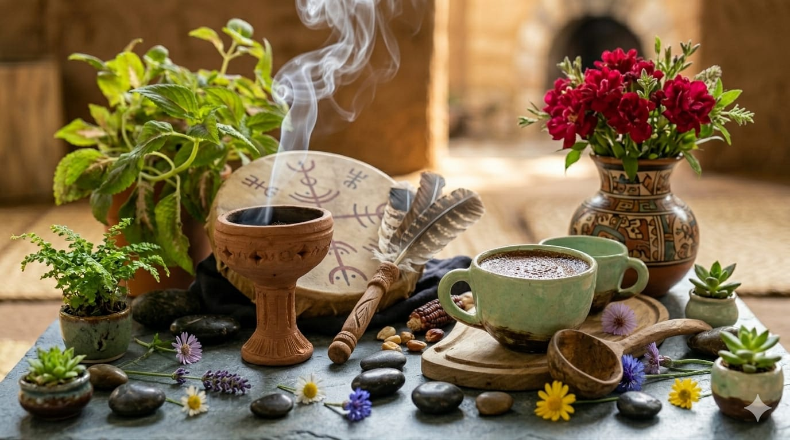
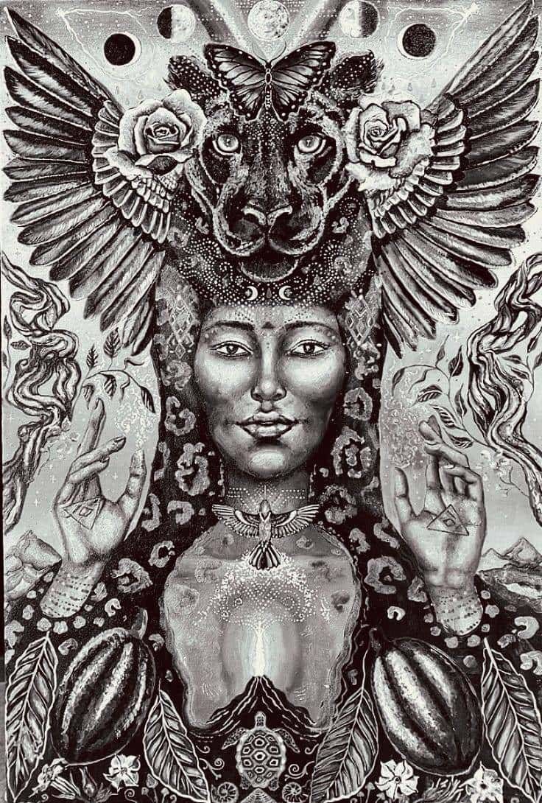
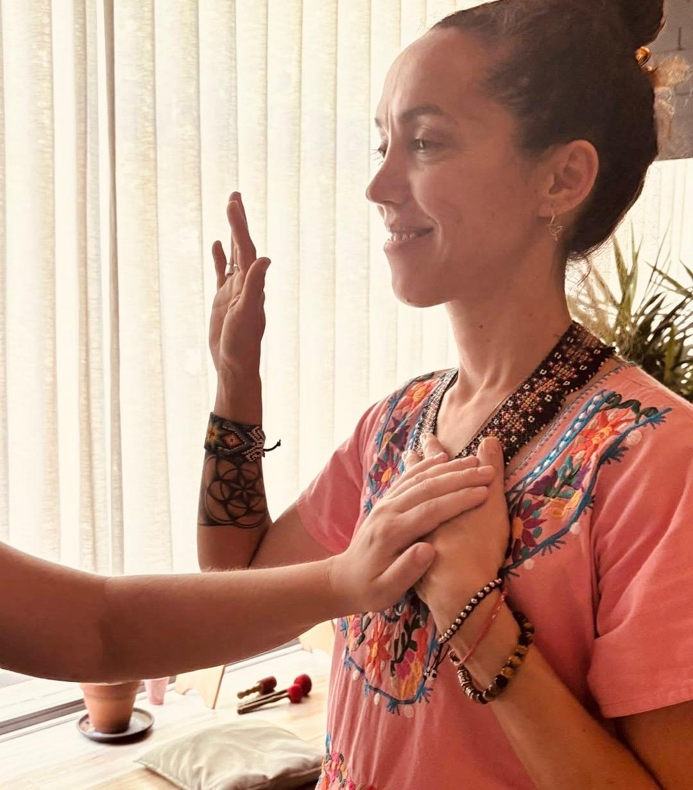

Una invitación sagrada
Una experiencia de conexión, introspección y amor
a través del cacao más puro
La ceremonia del cacao es un ritual espiritual y cultural centrado en el consumo consciente de cacao en su forma más pura. El cacao se utiliza como una herramienta para abrir el corazón, fomentar la introspección y crear un espacio de profunda conexión con los demás.
El nombre científico del cacao, Theobroma cacao, proviene del griego y significa literalmente "alimento de los dioses". Esta bebida sagrada ha sido venerada por las civilizaciones mesoamericanas durante miles de años, y hoy recuperamos su poder para sanar y transformar.
Descubrí los beneficios
El cacao ceremonial es completamente distinto al cacao en polvo del supermercado o al chocolate común. Es cacao crudo y puro, sin leche, sin azúcar, sin aditivos — la esencia más auténtica de la fruta del cacao, con todas sus propiedades intactas.
Los granos se tuestan suavemente para liberar sus aromas. Luego se someten a una molienda lenta que calienta la manteca de cacao, convirtiéndola en una pasta suave y homogénea — sin ningún aditivo.
Una vez despojados de su cáscara, los granos se muelen finamente. La fricción genera un líquido denso y oscuro de color marrón: pasta de cacao puro, sin leche ni azúcar. Solo cacao en su estado más verdadero.
Lo que distingue al cacao ceremonial es que su proceso hace emerger el aceite esencial a la superficie de la pasta. Muchas de sus propiedades son liposolubles, por lo que este aceite garantiza una absorción óptima y una experiencia más potente y profunda.

Esta práctica tiene sus orígenes en las civilizaciones mesoamericanas, como los mayas y los aztecas, quienes consideraban el cacao un alimento sagrado. Lo usaban en rituales dedicados a honrar la tierra, los ciclos de la vida y los vínculos entre las personas.
Los mayas y mexicas preparaban bebidas de cacao mezcladas con agua, especias, flores o chiles, agitadas hasta obtener una densa espuma. Estas bebidas se consumían en contextos rituales: bodas, pactos, ofrendas y ceremonias de iniciación.
Hoy, la ceremonia del cacao recupera esta sabiduría ancestral para guiarnos hacia nuestra propia esencia.
El cacao no solo nutre el cuerpo — abre el alma. Cada ceremonia es una oportunidad de transformación.
El cacao actúa como un suave maestro que disuelve las barreras emocionales, creando espacio para el amor propio y la compasión.
La ceremonia crea un campo de presencia compartida donde las conexiones humanas se vuelven más genuinas y profundas.
La teobromina del cacao ofrece un estímulo suave y sostenido que eleva la vitalidad sin los picos de la cafeína.
El cacao potencia los estados contemplativos, permitiendo mayor concentración y una presencia más profunda en el momento.
El cacao estimula la liberación de endorfinas y serotonina, elevando naturalmente el estado de ánimo y el bienestar general.
Al mejorar la circulación sanguínea cerebral, el cacao favorece la claridad mental y despierta la creatividad dormida.
Hace cinco años el cacao llegó a mi vida como una medicina de transformación profunda: una invitación a ablandar el corazón, escucharme y reconectar con mi sensibilidad más auténtica.
Tras un año de práctica íntima y consciente, comencé a facilitar ceremonias en Buenos Aires, festivales en Capilla del Monte y mi espacio holístico en Los Hornillos, Córdoba — mi casa templo. En 2023 respondí al llamado de llevar esta medicina a Europa, compartiendo ceremonias en Barcelona, Tarragona, Valencia y Cerdeña, tejiendo encuentros de meditación, música oráculo, canto, liberación de la voz, movimiento corporal y reconexión con el niño interior.
Hoy acompaño desde Buenos Aires a quienes sienten el llamado del cacao: abriendo espacios de presencia, amor y conciencia donde cada persona puede recordar la verdad que habita dentro de sí.
Como sacerdotisa del cacao, te espero para compartir, sanar y seguir expandiéndonos juntos en el amor y la conciencia.

Cada paso es un umbral. Cada momento, una oportunidad de presencia.
Iniciamos con una meditación guiada para aquietar la mente, enraizar el cuerpo y abrir el corazón a la experiencia que nos espera.
El cacao se prepara de manera consciente: los granos se tuestan suavemente, se muelen hasta obtener una pasta pura y se mezclan con agua caliente con devoción y respeto.
La bebida se entrega a cada participante como un gesto imbuido de intención, amor y gratitud. Recibir el cacao es el primer acto de apertura.
La respiración consciente amplifica los efectos del cacao, moviliza la energía y prepara el cuerpo para estados más profundos de conciencia.
A través de mantras, cantos y música intencional, vibramos en frecuencias que resuenan con la energía del cacao y el amor.
La ceremonia concluye con un espacio para integrar la experiencia: un círculo de compartir, gratitud y el retorno suave a la cotidianidad.
"Cuando el cacao toca tu corazón, algo se mueve. Algo que estaba dormido despierta. Y en ese despertar, te encontrás con vos mismo como quizás nunca antes."
No se trata de escapar de la realidad, sino de encontrarla más plenamente. La ceremonia del cacao es un espejo — devuelve lo que siempre estuvo ahí, esperando ser visto.
Para conocer fechas y precios, contáctanos
Completá el formulario y nos ponemos en contacto con vos a la brevedad.